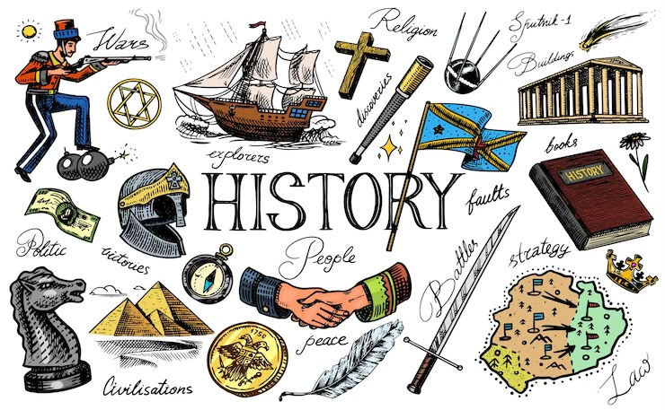

¿Qué es la conciencia histórica?
Es la capacidad de entender que vivimos en una sociedad con un pasado, que ese pasado explica en parte el presente y que nuestras decisiones influirán en el futuro. No se trata de memorizar fechas, sino de pensar históricamente: preguntar, comparar e investigar.
